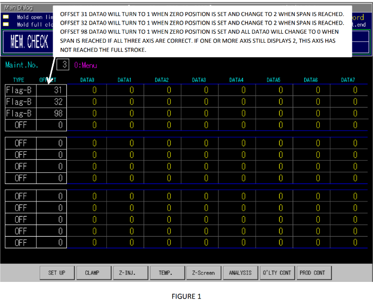
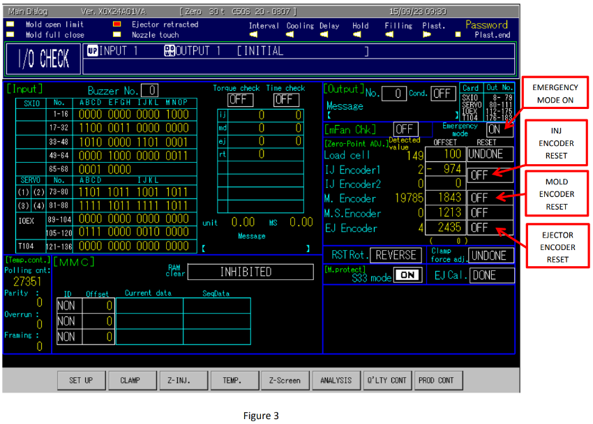

· Confirm the IMM emergency mode is “On” on the I/O page (Ctrl + F2).
· Do not push Reset on the Sumitomo HMI.
· Barrel heats at process temperature and cold start interlock is cleared.
· Close all doors and turn servo power on.
· Machine is in Standby mode with motor on.
· All steps should be carried out in Standby mode.
· Open mould space by 5-10 mm.
· Close the clamp fully (there should be a 5-10 mm gap between the mould halves in the closed position if done correctly).
· Retract injection unit fully.
· Move the screw to the fully forward position.
· In Standby mode, reset the M5, I5, and E5 alarms as follows
1. Press and hold Clamp Close
2. While continuing to hold Clamp Close, press and hold Inject
3. While continuing to hold both previous buttons, press and hold Reset
4. Keep all three buttons held continuously for 10 seconds
· Reset all alarms on the alarm page. You may have to press Reset 3-4 times for alarms to clear.
· If alarms E15/I15/M15 occur, the machine needs to be power-cycled and the process executed again.
· Once all alarms are reset and each axis can move, you can set the zero points for each axis.
· Input the user password (Ctrl + Up, type 7777 into the dialog box, and press Enter).
· Set up the first three data boxes as shown in Figure 1.
· In the first “Type” box, select Flag-B. In the “Offset” box next to this, enter a value of 31 (Injection).
· In the second “Type” box, select Flag-B. In the “Offset” box next to this, enter a value of 32 (Clamp).
· In the third “Type” box, select Flag-B. In the “Offset” box next to this, enter a value of 98 (Ejector).

· Open the I/O screen (Ctrl + F2).
· Ensure the injection unit is retracted and the screw is in the fully forward position.
· Press and hold the Inject Forward button and toggle the IJ Encoder Off box to “On”. It will automatically turn back off afterwards.
· The detected value should now read “-510”.
· Open the memory check screen (Ctrl + F8, then select screen 3).
· In the first Data 0 box, the value should now be 1. This means the procedure has begun but is not complete.
· Press and hold the Screw Pull Back button (the screw will slowly move backward) until the first Data 0 box value reads 2. This means the procedure for Injection is complete.
· Move the screw back within range to approx. 50.00mm
· Open the I/O screen (Ctrl + F2).
· Ensure the mould space is open by 5-10 mm and the clamp is fully closed over.
· Press and hold the Clamp Close button and toggle the M Encoder Off box to “On”. It will automatically turn back off afterwards.
· The detected value should now read “2”.
· Open the memory check screen (Ctrl + F8, then select screen 3).
· In the second Data 0 box, the value should now be 1. This means the procedure has begun but is not complete.
· Press and hold the Clamp Open button (on the Primary Package machine, be careful that flow sensor cables do not get caught on the item pillar) until the second Data 0 box value reads 2. This means the procedure for Clamping is complete.
· Move the clamp unit back within range to approx. 140.00mm
· Open the I/O screen (Ctrl + F2).
· Ensure the ejectors are in the fully retracted position.
· Press and hold the Ejector Retract button and toggle the EJ Encoder Off box to “On”. It will automatically turn back off afterwards.
· The detected value should now read “-50”.
· Open the memory check screen (Ctrl + F8, then select screen 3).
· In the third Data 0 box, the value should now be 1. This means the procedure has begun but is not complete.
· Press and hold the Ejector Forward button (the ejector bar will slowly move forward) until the third Data 0 box value reads 2. This means the procedure for the Ejector is complete.
· Retract the ejectors back within the range allowing you to reinstall the B side base.
· The Data 0 fields should all change from 2 to 0 when the last axis has completed the procedure.
· If all fields are 0, return to the I/O screen (Ctrl + F2) and turn off emergency mode.
· If emergency mode does not turn back on, the procedure is complete.
